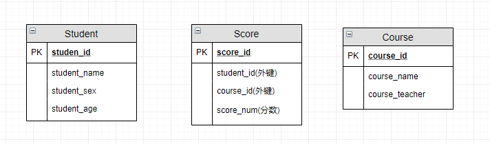

摘要：计算机基础之数据库，数据库基础包括主键、范式等，MySQL 包括数据类型、 SQL语句书写、索引 视图 触发器 存储过程、数据库性能优化，MySQL 基础架构、存储引擎，事务、锁、MVCC 等，Redis，Elasticsearch。
目录
[TOC]
数据库、数据库管理系统、数据库系统
数据库系统（Data Base System，简称 DBS）：通常由软件、数据库和数据管理员组成。
- 数据库（DataBase 简称 DB）：就是信息的集合、或者说数据库是由数据库管理系统管理的数据的集合。保存有组织的数据的容器（通常是一个文件或一组文件）。
- 数据表（table） - 某种特定类型数据的结构化清单。
- 数据库管理系统（Database Management System 简称 DBMS）：是一种操纵和管理数据库的大型软件，通常用于建立、使用和维护数据库。
- 数据库管理员（Database Administrator, 简称 DBA）：负责全面管理和控制数据库系统。
数据库系统基本构成如下图所示：

SQL 关系型数据库
SQL、NoSQL 的区别
- SQL 关系型数据库：建立在关系模型的基础上的数据库。
- 关系模型表明了数据库中所存储的数据之间的联系（一对一、一对多、多对多）。
- 由多张能互相连接的表组成。数据都被存放在了各种表中（比如用户表），表中的每一行就存放着一条数据（比如一个用户的信息）。
- 应用场景：主要用于执行规模小而读写频繁，或大批量极少写
访问的事务。
- 借助于集合、代数等数学概念和方法处理数据。
- NoSQL 非关系型数据库：
- 关系数据库在一些数据敏感的应用中读写性能较差，如为海量文档创建索引、高流量网站的网页服务，及发送流式媒体，故采用 NoSQL；
- 应用场景：高并发、大数据场景。支持
key-value、文档、图片等形式，可用硬盘或随机存储器作为载体，不支持SQL；通过键值对存储：数据以非结构化格式存储，并使用唯一的键来检索值。
数据模型
数据库按照数据结构来组织、存储和管理数据，共有三种模型：
- 层次模型：轻量级数据访问协议，如树；
- 网状模型：大型数据储存；
- 关系模型：表明数据库中存储数据间一对一、一对多、多对多的联系，如表格。
分类
- SQL 关系型数据库：
- 商用数据库，如：
Oracle，SQL Server，DB2 等；
- 开源数据库，如：
MySQL Community Server (GPL) 社区版：主要用于业务数据存储；- MariaDB 分支：开源社区用来规避 MySQL 闭源的风险，大部分跟 MySQL 5.5 以前的版本使用差不多；
- PostgreSQL 等；
- 桌面数据库，如：微软
Access，适合桌面应用程序使用；
- 嵌入式数据库，如：
SQLite（如微信本地的聊天记录的存储），适合手机应用和桌面程序。
- NoSQL 非关系型数据库：
- Redis：Key-value；RAM 存储；缓存数据存储；
ElasticSearch：搜索数据存储；- MongoDB：Nodejs 在 Mongoose 包的帮助下 JSON 的数据格式直接插入；用户行为分析数据存储；
- Apache Cassandra（Facebook 使用、高度可扩展）、Dynamo；
- MemcacheDB 和 HBase 等。
主码, 外码, 主属性, 非主属性
- 元组：表中的一行/一条记录；
- 码：码就是能唯一标识实体的某个或某几个属性的组合，用于区分每条记录，
对应表中的列；
- 候选码：能唯一标识一条记录的最小属性集和？；
可被选为主码的属性或属性组；
- 主键（主码）
id：用于唯一标识一条记录的某个属性，一个表只能有一个主键。不可重复、不可空。主码是从候选码中选出来的。 一个实体集中只能有一个主码，但可以有多个候选码。unique + not null。
- 外键（外码）：用来和其他表建立联系，是另一个表的主键，一个表可有多个外键。可重复、可为空。
- 主属性：所有候选码属性的并集；
- 非主属性：相对于主属性来说，不包含在任何一个候选码中的属性。
主键和外键有什么区别?
见上。
不用外键与级联更新
使用 SET FOREIGN_KEY_CHECKS=0; 禁用外键约束
一切外键概念必须在应用层解决：
- 当表越来越多，关系越来越复杂时，一般在设计数据库时通过外键来标注表与表间的关系；
- 但在数据库中往往不使用外键，而是通过逻辑来关联。
级联更新：更新当前表的主键时、会触发其它表的对应关联外键更新。
- 如：学生表中的 student_id 是主键，那么成绩表中的 student_id 则为外键。
- 如果更新学生表中的 student_id，同时触发成绩表中的 student_id 更新，即为级联更新。
为什么不要用外键呢？
- 性能问题：
- 增加了复杂性、维护负担： 每次做插入、更新或删除数据时都必须考虑外键约束，数据库都需要检查外键约束的完整性。数据库需都要维护这两个主键索引、外键索引，这可能会导致性能开销。
- 外键影响数据库的插入速度；其次，在插入新的订单项之前，数据库需要执行数据一致性检查以确保引用的订单号在 Orders 表中存在。这额外的检查可能增加插入订单项的执行时间。
- 锁竞争问题：多个事务同时对同一数据进行修改时，可能会引起锁竞争和死锁，导致数据库出现阻塞和无法继续处理请求的情况。
- 对分库分表不友好：相关数据可能分布在不同的数据库中，外键通常难以跨越不同数据库来建立关系。更重要的是，分库分表环境中，数据的一致性可能更难维护。跨库事务搞不定。
- 级联更新是强阻塞，存在数据库更新风暴的风险；
- 外键的主从关系是定的，假如那天需求有变化，数据库中的这个字段根本不需要和其他表有关联的话就会增加很多麻烦。
- 适用于单机低并发，不适合分布式、高并发集群；
数据库更新风暴
数据库更新风暴（Database Update Storm）：通常指的是在高并发环境下，多个客户端同时对数据库进行大量的更新操作（如插入、更新或删除记录），导致数据库性能急剧下降或完全崩溃的情况。
数据库系统可能无法及时处理所有的请求，导致请求堆积和阻塞。这可能会导致以下问题：
- 响应时间延长：由于请求堆积，数据库无法及时响应客户端的请求，导致延迟增加，响应时间变长。
- 锁竞争与死锁：多个客户端同时对同一数据进行修改时，可能会引起锁竞争和死锁，导致数据库出现阻塞和无法继续处理请求的情况。
- 性能下降与系统崩溃：数据库系统可能无法承受来自大量并发更新的压力，导致系统性能急剧下降甚至崩溃。
原因：
- 高并发写入：当多个用户同时向数据库中大量写入数据时，会导致数据库服务器需要处理大量的写入操作。如果这些写入操作集中在一个短时间内发生，就会造成数据库更新风暴。
- 批量处理操作：某些应用程序可能会定期进行批量处理，例如批量插入、更新或删除数据。如果这些批量处理操作没有合理地进行流量控制，就可能在某个时间点上集中发生，引发数据库更新风暴。
- 锁竞争：当多个用户同时对同一数据进行修改时，数据库会使用锁机制来确保数据的一致性。如果多个用户同时请求对同一数据进行更新，就会导致锁冲突，从而降低数据库的并发处理能力。
- 索引维护：数据库中的索引是用来提高查询性能的重要组成部分。当大量的更新操作同时发生时，索引的维护成本会急剧增加，从而影响系统性能。
- 数据库配置不合理：数据库服务器的配置参数对性能有着重要的影响。如果数据库配置不合理，例如缓冲区大小设置过小、日志文件过小或过大，都可能导致数据库更新风暴的发生。
优化和解决：为了避免数据库更新风暴，可以考虑以下策略：
- 优化数据库设计：合理设计数据库结构、分表分库、优化查询语句、合理设计和管理索引，以提高数据库的写入性能。
- 批量提交与事务管理：将多个小的更新操作合并成一个批量更新操作，减少数据库的事务提交次数，提高系统性能。
- 负载均衡与缓存：通过负载均衡将请求分散到多个数据库实例上。使用缓存技术，将热点数据放入缓存中，减轻数据库的压力。
- 引入分布式数据库：采用分布式数据库架构，将数据分散存储在多个节点上，提高系统的并发处理能力和容错能力。
- 异步处理与消息队列：将写入操作异步化，并使用消息队列来缓冲和调度写入请求，降低数据库的负荷。
- 流量控制：对于批量处理操作或高并发写入场景，可以采用流量控制的方式，将请求分散在一个时间段内进行处理，避免在某个时间点上集中发生，从而减轻数据库的负载压力。
- 定期维护和优化：定期对数据库进行维护和优化，包括清理无用数据、重新组织索引、优化数据库配置参数等，可以提高数据库的性能和稳定性。
- 监控和预警：建立数据库监控系统，实时监测数据库的性能指标，例如CPU利用率、内存利用率、磁盘IO等，及时发现并解决潜在的问题。同时，设置预警机制，当数据库发生更新风暴时，及时采取相应的应对措施。
- 提升硬件性能：增加数据库服务器的硬件配置，如增加CPU核心数、内存容量等，提高系统处理能力。
数据库范式
函数依赖
- 函数依赖 ：若在一张表中，在属性（或属性组）X 的值确定的情况下，必定能确定属性 Y 的值，那么就可说
Y 函数依赖于 X，写作 X → Y。
- 部分函数依赖 ：如果
X→Y，且存在 X 的一个真子集 X0（X 中的部分属性就可以确定 Y），使得 X0→Y，则称 Y 对 X 部分函数依赖。
- 如学生基本信息表 R关系（学号，身份证号，姓名）中，（学号，身份证号）->（姓名），（学号）->（姓名），（身份证号）->（姓名）；
- 姓名部分函数依赖于（学号，身份证号）；
- 完全函数依赖：在一个关系中，某个非主属性数据项依赖于全部关键字、属性、主键？。
- 不同班级学生编号可能相同，在 R 关系中，（班级，学生编号）->（姓名），但（学生编号）->（姓名）不成立，（班级）->（姓名）不成立，姓名完全函数依赖于（班级，学生编号）；
- 传递函数依赖 ： 某个字段依赖于主键，而有其他字段依赖于该字段。会导致数据冗余和异常。
- 在关系模式 R(U)中，设 X，Y，Z 是 U 的不同的属性子集，如果 X 确定 Y、Y 确定 Z，且有 X 不包含 Y，Y 不确定 X，（X∪Y）∩Z=空集合
- 如，在关系 R（学号 , 姓名, 系名，系主任）中，学号 → 系名，系名 → 系主任，非主属性系主任对于学号有传递函数依赖。
范式
用于规范建表，划分字段。
1NF（第一范式）：对属性的原子性约束，要求属性（表中的字段）不可再分（为其他字段）。是所有关系型数据库的最基本要求，即创建的表一定满足第一范式。2NF（第二范式）：对记录的惟一性约束，要求主键可以唯一标识记录。
- 在
1NF 基础上，消除了非主属性对于码的部分函数依赖，非主属性都依赖于主键。
3NF（第三范式）：对字段冗余性的约束，要求字段没有冗余，即任何字段不能由其他字段派生出来。
- 在
2NF 基础上，消除了非主属性对于码的传递函数依赖（任何非主属性不依赖于其它非主属性）。
- 基本上解决了数据冗余，插入异常，修改异常，删除异常的问题。
- 比如在关系 R(学号 , 姓名, 系名，系主任)中，学号 → 系名，系名 → 系主任，所以存在非主属性系主任对于学号的传递函数依赖，所以该表的设计，不符合 3NF 的要求。
BCNF：主属性内部不能有部分或传递依赖。
数据库设计
数据库设计就是建立数据存储模型。
设计步骤
- 需求分析 : 包括数据、功能和性能需求。根据功能模块划分实体（往往指现实世界中一个完整单位），实体间的关系，各实体的属性、可选唯一标识属性（主键）、数据存储特点/生命周期（是否常用，分库分表，永久存储，定期归档，定期清空等）。
- 概要设计 : 主要用 E-R 模型进行设计，如用 Visio 画
E-R 图。
- 逻辑设计/详细设计 : 通过将 E-R 图转换成表，实现从 E-R 模型到关系模型的转换，并应用三大范式优化。
- 物理结构设计 : 为设计的数据库选择合适的存储结构和存取路径，做具体的技术选型。
- 数据库实现 : 包括 SQL 编程（创建数据库表）、测试和试运行。
- 数据库的运行和维护 : log 日志，根据新需求进行建表、索引优化、大表拆分。
E-R 图
E-R 图 / 实体-联系图：提供了表示实体类型、属性和联系的方法，用来描述现实世界的概念模型。 是描述现实世界关系概念模型的有效方法。
- 实体：矩形；
- 属性： 唯一标识属性（主键）、派生属性、可选属性、联系属性；
- 关系：1:1，1:N，M:N；
- 每个学生可以选若干门课程，同一门课程也可以被若干人选择，所以它们之间的关系是多对多（M: N）
- 元组、候选码、主码、域；
- 多值属性：
E-R 图中的冲突有三种：属性冲突、命名冲突、结构冲突。

转换为数据库实际的关系模型：

UML 类图
见面向对象文档。